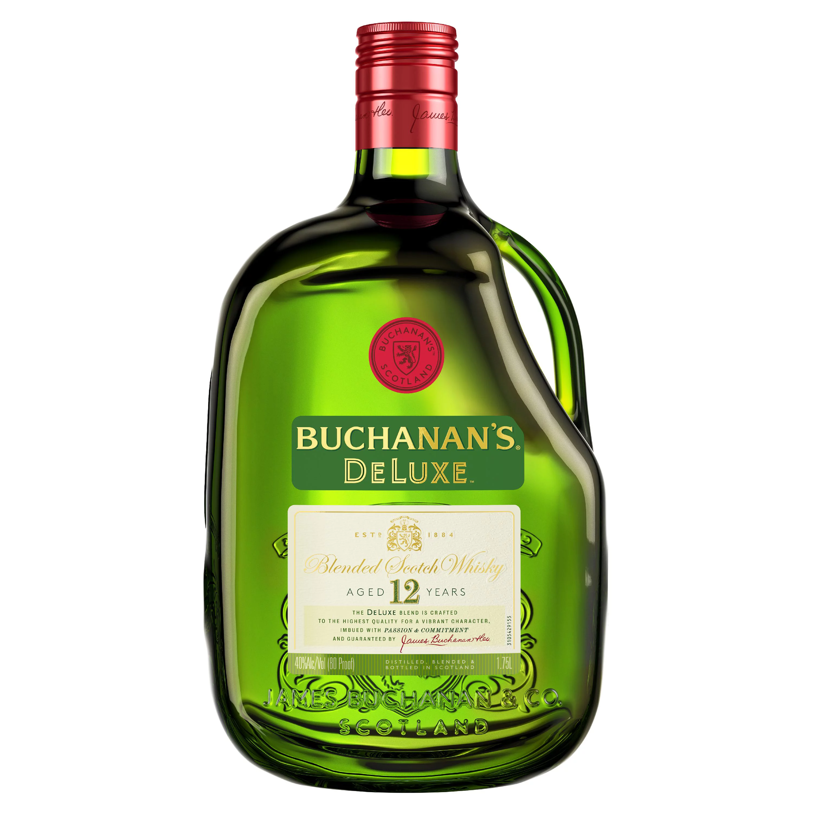

Saludos a todo somos Licores YAFG .CA, somos los numero uno en venta y distribución de licores al mayor y detal, nuestra empresa empezó en el año 2014. Todos estos años hemos estado luchando para mejorar nuestro servicio y complacer a nuestra clientela, esperamos en este años en 2023 seamos muchos trabajadores más y llegar a toda Venezuela, trabajamos con las mejores masca en el mercado y siempre a su disposición.

